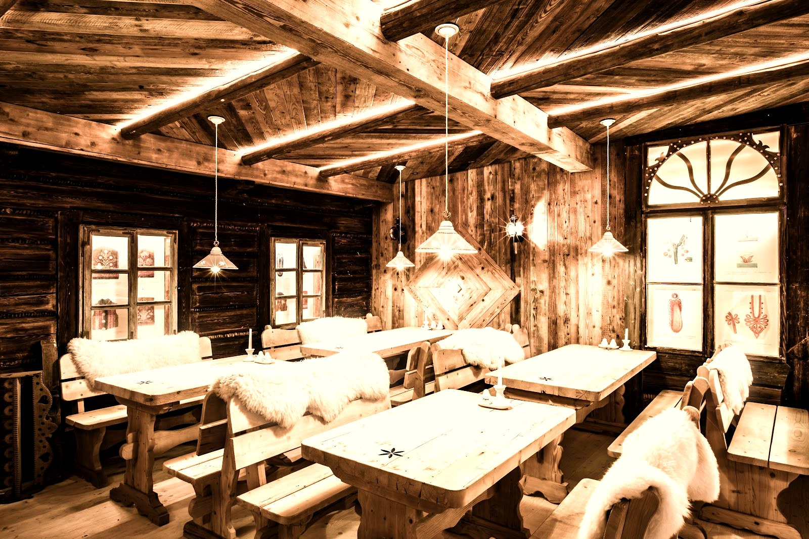
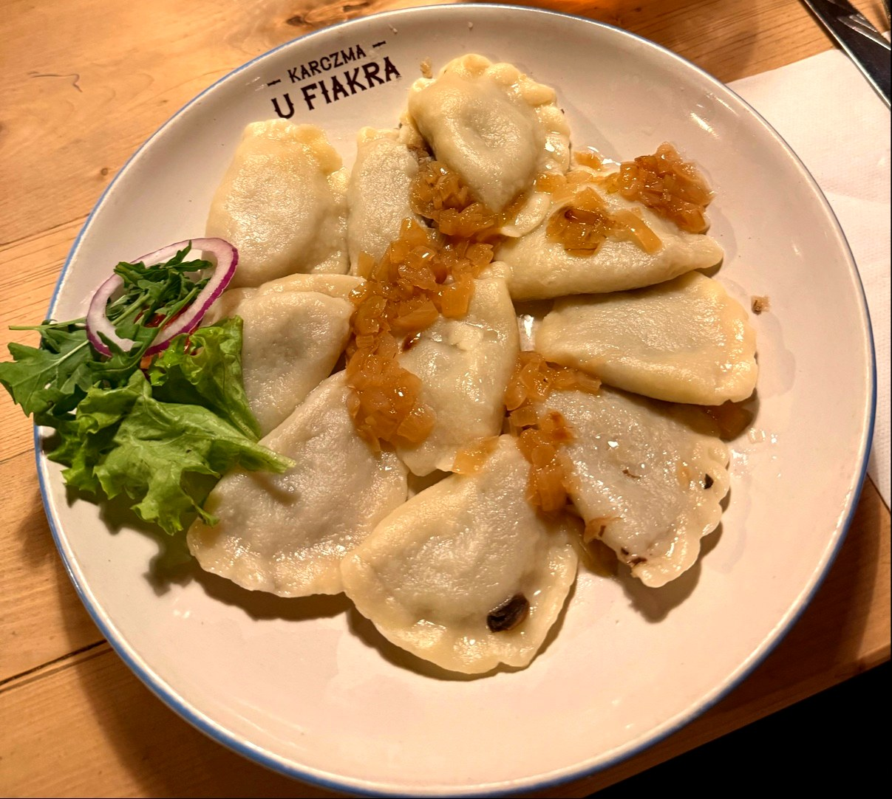
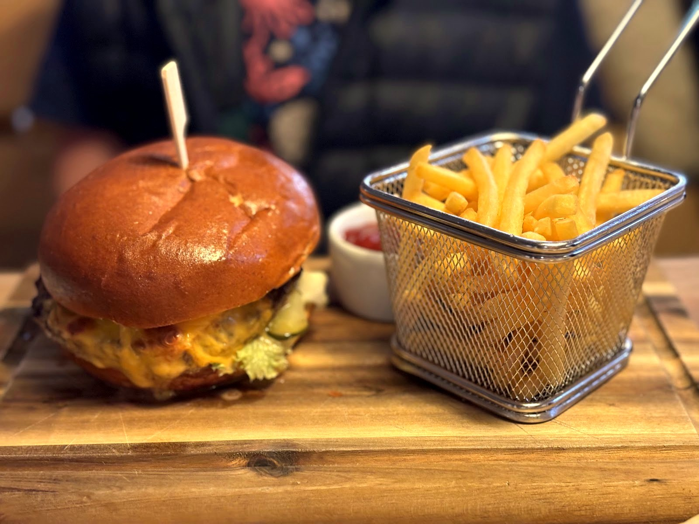

Drewniane wnętrza, dania prosto z Podhala i wieczorny klimat z kapelą. Najlepiej jednak poczuć to na miejscu, przy Krupówkach 9.



Wieczorami i w sezonie bywa gwarno - zarezerwuj stół z wyprzedzeniem, a my zadbamy o resztę.
Zarezerwuj stół